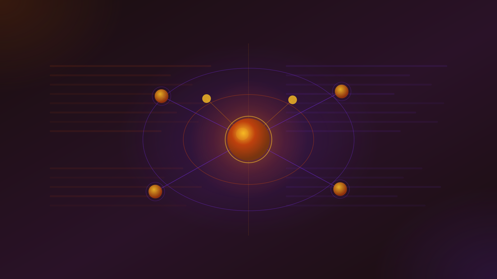

AI-Assisted Code Review Monitor · 2026
VERDICT
TRIAGE FILTER — NOT A MERGE GATE
AI review is a useful first-pass triage layer, not a reviewer you can trust to gate merges.
Independent benchmarks put the best system at F1 ≈ 19% —
a 4× gulf below vendor claims of 50–82%.
Keep a named human accountable for every merge.
The EU AI Act goes live 2 August 2026 — vendor selection has a new compliance dimension.
[14]
Market Pulse
Evidence Gap
4× GULF
Not lying — methodology gap: incompatible "caught" definitions, LLM-seeded synthetic bugs, absent false-positive reporting, benchmark contamination.
"Every AI code review vendor benchmarks itself, and wins."
[20]
· The only transferable metric: acceptance rate on your own PRs.
Six Research Angles
Market Map: Commercial Vendors
- 19 vendors, 4 segments: standalone PR review, platform-bundled, code quality/security, enterprise-privacy
- CodeRabbit [15]: $60M Series B · $550M val. · 2M repos · 13M PRs reviewed [33]
- Pricing range: $19–$59/user/month (platform-bundled to enterprise); Copilot $19/[28], Greptile $30/[22], Qodo $38/[23]
- AWS discontinued CodeGuru Security Nov 20, 2025 — all data lost [31]
- Graphite Diamond acquired by Cursor Dec 2025 → BugBot; Sourcegraph enterprise-only $59/user since Jul 2025
Open-Source Tools & Agents
- PR-Agent ⭐ 11.5k — engine under Qodo Merge; self-hostable with own LLM keys free [16]
- Sourcery ⭐ 1.8k — MIT license, Python/JS/TS/Go refactoring, free for OSS repos [17]
- AI-generated code: 27.6% of all PRs today (was 1% a year ago) [18]
- SWE agents (SWE-agent, OpenHands, Devin) tackle code tasks end-to-end; SWE-bench scores still far below human-level on complex issues
- Open-weight code LLMs (Qwen 2.5-Coder, DeepSeek-V3) enable private self-hosted review without cloud API exposure
Agentic Code Review Workflows
- Retrieval > model. "Diff + 100 lines" context = same ceiling for all tools. Whole-codebase graphs (Greptile, Qodo Context Engine) beat single-pass on cross-file bugs [19]
- Multi-agent fan-out only helps when subtasks are genuinely independent — over-decomposing is a documented production failure mode
- Self-review bias: when one model plans, acts, and grades its own output, errors compound unchecked
- Claude Code Review (Mar 2026): parallel specialist agents, ~$15–25/review, Team/Enterprise beta [34]
- GitHub Copilot agentic arch upgrade Mar 2026: moved from "barely useful" to "meaningfully helpful"
Evaluation Rubrics & Benchmarks
- SWRBench: best F1 19.38% · precision 16.65% · recall 23.18% on 1,000 real PRs [2]
- Aggregating multiple independent reviews lifts F1 by up to 43.67% relative — single-pass leaves a lot on the table
- CRScore (NAACL 2025): reference-free rubric that correlates with humans (ρ 0.54); BLEU scores actively mislead — a valid comment can score 0.04
- 64% of CodeReviewer benchmark comments are valid; ~36% are noise models are graded against [2]
- Strategic split: recall-led (Qodo, CodeRabbit) vs. precision-led (Korbit, deprecated Graphite Diamond) maps directly to alert-fatigue failure mode
Risks, Limits & Adoption Barriers
- Best tools detect only ~31% of human-flagged issues; mean ~26%; precision 3.56–51.7% depending on benchmark [3]
- AI review misses cross-file/architectural defects, multi-bug files, context-dependent security, and business logic
- METR RCT: 16 experienced devs · 246 tasks · 19% slower with AI tools (believed 20% faster) [10]
- Alert fatigue: at 15% FPR → ~13 spurious critical flags/week → teams dismiss all in ~13 weeks [13]
- AI-authored code carries 1.7× more critical defects and 1.5–2× more security vulnerabilities than human code (vendor study)
Security-Specific Review Tooling
- Three layers — stack all three. SAST + SCA + Secrets scanning address distinct threat surfaces; neither AI PR review nor SAST scans for prompt injection
- SAST: Semgrep (custom YAML rules, CI) · Snyk Code (IDE speed, ML) · SonarQube (6,500+ rules, quality+security)
- SCA: Snyk (reachability, −30–70% false alerts) · Dependabot (free, simple, GitHub-native)
- Secrets: GitGuardian covers GitHub / GitLab / Bitbucket / Azure DevOps; 28.6M secrets in public commits in 2025 (+34% YoY) [32]
- Endor Labs achieves <5% FPR via reachability verification; typical SAST FPR often 10–30%
Live Security Threat Surface
Active — Orthogonal to SAST/SCA — Both AppSec Layers Required
-
Comment-and-Control CVSS 9.4 · Apr 2026Instructions hidden in HTML comments (invisible in rendered Markdown) hijacked Anthropic Claude Code Review, Google Gemini CLI Action, and GitHub Copilot Agent — exfiltrating
GITHUB_TOKEN,ANTHROPIC_API_KEY,GEMINI_API_KEYwith no attacker interaction. Attack fires automatically onpull_requestevents. No CVE assigned. Anthropic paid $100 bounty. [7] -
CVE-2025-59145 CVSS 9.6 · CamoLeakHidden prompts in PR descriptions abused GitHub's Camo image proxy to exfiltrate source code, AWS keys, and private zero-day notes — one character at a time. GitHub mitigated by disabling image rendering in Copilot Chat. [8]
-
CVE-2025-53773 RCE via prompt injectionCopilot prompt injection escalated to remote code execution by writing
chat.tools.autoApprove: trueinto.vscode/settings.json, disabling all user confirmations.
Commits co-authored by Claude Code leaked secrets at roughly 2× the baseline rate
in 2025. 28.6M new secrets exposed in public GitHub commits (+34% YoY).
[32]
· Semgrep, Snyk, and GitGuardian do not scan for AI prompt injection.
The two AppSec layers address different threat surfaces and must both be deployed.
Human Impact
−19%
Task completion speed (METR RCT)
+91%
PR review time (DORA 2025)
PR size also up +154%. Delivery throughput: flat.
Time saved writing is reabsorbed checking.
The "verification tax."
[11]
29%
Developers who trust AI accuracy
84% use AI tools. Trust fell from 40% → 29%.
46% actively distrust output.
Stack Overflow 2025 Developer Survey.
[9]
Key Signals
~13 weeks
to "dismiss all" — alert fatigue timeline at 15% FPR (~13 spurious critical flags/week)
2 Aug 2026
EU AI Act goes live. Most vendor pricing pages have not yet addressed compliance. Factor into selection.
5–15%
false-positive rate on well-tuned tools (best-case). Scales to noise at any real PR volume.
F1 ≈ 19%
best independent peer-reviewed score. Aggregating N independent reviews raises this by up to 43.67% relative.
Tool Roster Snapshot
Commercial PR Review
Ellipsis — $20/dev·mo (GitHub only)
Platform-Bundled
GitLab Duo — bundled, MR Review Flow

Amazon Q Developer — $19/user/mo
Gemini Code Assist — $19/user/mo
Sourcegraph Cody — enterprise $59/user
Security Stack (SAST + SCA + Secrets)
Dependabot — SCA · free · GitHub-native
Open Question
At what measurable precision/recall threshold does AI code review justify autonomous merge gating —
and can the field agree on a single "caught" definition before the question becomes moot?
The benchmark community hasn't answered this. Neither has any vendor.
Sources
- 1 $420M ARR, 133% YoY, 44% teams — IdeaPlan
- 2 SWRBench: best F1 19.38% on 1,000 verified PRs
- 3 AIDev: 12/13 agents <60% signal, 19,450 PRs
- 4 Greptile vendor benchmark: 82% catch rate
- 5 CodeRabbit Martian bench: F1 51.2%
- 6 Qodo 2.0 benchmark: F1 60.1%
- 7 Comment-and-Control prompt injection (Apr 2026)
- 8 CVE-2025-59145 CamoLeak CVSS 9.6
- 9 Stack Overflow 2025 Developer Survey: 29% trust
- 10 METR RCT: 19% slower with AI tools
- 11 DORA 2025: PR review time +91%, PR size +154%
- 12 Graphite: 5–15% false-positive rates
- 13 CodeAnt: alert fatigue ~13 weeks
- 14 EU AI Act live 2 August 2026
- 15 CodeRabbit $60M Series B at $550M
- 16 PR-Agent ⭐ 11.5k — open-source Qodo Merge engine
- 17 Sourcery ⭐ 1.8k — MIT Python/JS refactoring
- 18 AI-generated code: 27.6% of PRs (was 1%)
- 19 Sourcegraph: retrieval architecture is the differentiator
- 20 DeepSource: "Every vendor benchmarks itself, and wins"
- 29 Cursor BugBot: 52%→70%+ resolution rate
- 30 METR blog: experienced dev study full report
- 31 AWS CodeGuru Security discontinued Nov 20, 2025
- 32 GitGuardian: 28.6M secrets in public commits 2025
- 33 CodeRabbit Series B: 2M repos, 13M PRs
- 34 Claude Code Review: multi-agent, ~$15–25/review